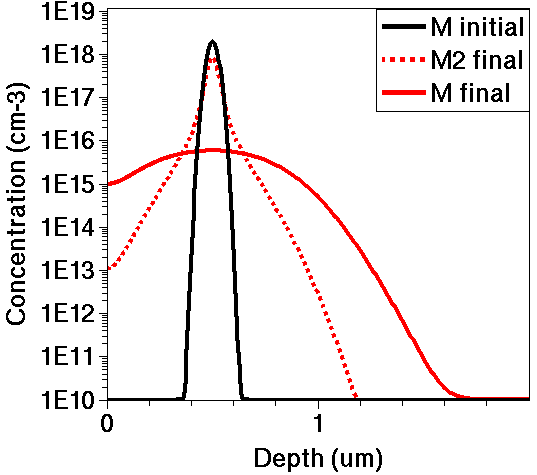

7.1 Overview
7.2 A Model for Alagator
7.3 Introducing a Solution
7.4 Defining an Equation Directly
7.5 Defining an Equation Using Terms
7.6 Defining an Equation Using Callback Procedures
7.7 Simulating a Diffusion Step With New Model
7.8 Assignment
In Sentaurus Process, the Alagator (A Layered Approach to Generating Advanced Technically Oriented Research) scripting language is used to specify partial differential equations and boundary conditions for use with diffusion simulations. All Sentaurus Process diffusion models are defined using Alagator.
This design enables you to create custom diffusion models and to integrate them with native Sentaurus Process models easily. Alagator can be used to solve any diffusion equation including dopant, defect, impurity, and oxidant diffusion equations.
To use the Alagator scripting language efficiently, some understanding
of Tcl is required (see the Tool Command Language module
for an introduction).
The files discussed in this section are part of the Sentaurus
Workbench project Alagator. The complete project can be
investigated from within Sentaurus Workbench in the directory
Applications_Library/GettingStarted/sprocess/Alagator.
To introduce the Alagator scripting language, the following diffusion problem is considered:
\[ {∂C_{M}} / {∂t} = ∇D_{M} ∇C_{M} - 2k_{1} (C_{M}^{2} - k_{2} C_{M2}) \]
\[ {∂C_{M2}} / {∂t} = k_{1} (C_{M}^{2} - k_{2} C_{M2}) \]
where \(C_{M}\) is the concentration in cm–3 of a new species "M", and \(C_{M2}\) is the concentration of trapped clusters of two "M"s.
The diffusivity of "M" is given by:
\[D_{M} = 10^{-4} · e^{-{1.5\: \text"eV"}/{kT}} [{\text"cm"^2}/{\text"s"}] \]
The "M" forward reaction rate given by:
\[k_{1} = 4 · π · 2.7 · 10^{-8} · D_{M} [{\text"cm"^3}/{\text"s"}] \]
The binding coefficient of "M2" clusters is given by:
\[ k_{2} = 5 · 10^22 · e^{- {3.0\: \text"eV"} / {kT}} [\text"cm"^{-3}] \]
"M2" clusters are assumed to be immobile.
Sentaurus Process refers to a species as a solution. To introduce a new species to Sentaurus Process, use:
solution name= M add !negative !damp ifpresent = "M" solution name= M2 add !negative !damp ifpresent = "M2 M"
Here, the name "M" is used for the concentration field \(C_{M}\) of the new species and "M2" is used for the "M" cluster concentration \(C_{M2}\). The option add creates a new species.
The !negative option states that this field cannot have negative values. The !damp option suppresses damping of the Newton iterations. The ifpresent argument activates a conditional solve.
Here, the equation for "M" will be solved only if "M" is present, that is, if the field CM was previously defined. Similarly, the equation for "M2" clusters is solved only if both "M" and "M2" are present.
To define the diffusion equation for the species "M" and "M2", use:
set D0 "\[Arrhenius 1e-4 1.5\]" set k1 "4 * 3.1415 * 2.7e-8 * $D0" set k2 "\[Arrhenius 5.0e22 3.0\]" pdbSetString Silicon M Equation "ddt(M)-$D0*grad(M)+2*$k1*(M^2-$k2*M2)" pdbSetString Silicon M2 Equation "ddt(M2)-$k1*(M^2-$k2*M2)"
The first set of Tcl set commands defines the coefficients for the diffusion model. The brackets are masked by backslashes to suppress the evaluation of the Arrhenius law at the time of the definition (see Section 4.2 Changing Parameters in the Command File).
The pdbSetString command makes an entry into the parameter database. Here, entries of type Equation are created for the material silicon, and the species "M" and "M2". Alagator scans Equation entries in the parameter database to determine which differential equations to solve.
The differential equation itself is given as a string where ddt(M) denotes a partial differentialization with respect to time, and $D0 * grad(M) denotes \(∇D_{M} ∇C_{M}\).
The grad operator implements a simple diffusion equation,
that is, the divergence operator is implied automatically.
When working with preexisting parameter data entries, it is
recommended to use the command pdbSet instead of the type-specific command
(such as pdbSetString and pdbSetDouble), because pdbSet
automatically checks for the type and syntax. However, if a new parameter data entry
is to be created, the typed versions must be used, for the same reason: pdbSet will
flag an error because this new entry cannot (yet) be found in the parameter database.
The diffusion equations for "M" and "M2" share the reaction term \(k_{1} (C_{M}^{2} - k_{2} C_{M2})\).
In the implementation discussed in the previous section, the reaction term is defined separately and independently for the two equations. For a complex set of diffusion equations, this approach is tedious and error prone. It is better to define the coupling term once and then use it in both equations.
Define the reaction term with:
term name= MReact Silicon add eqn= "$k1 * ( M^2 - $k2 * M2)"
Define the diffusion equation with the term:
pdbSetString Silicon M Equation "ddt(M) - $D0 * grad(M) + 2 * MReact" pdbSetString Silicon M2 Equation "ddt(M2) - MReact"
MReact is an Alagator term and not a Tcl variable. Therefore, it is not de-referenced with the dollar sign.
So far, equations for specific species have been defined. However, often the diffusion of several different species is described by the same equation, but possibly with different coefficients or parameters. Alagator supports the reuse of equations by using callback procedures.
Implement the "M" and "M2" diffusion equations with callback procedures following these steps.
Step 1. Make new entries in the parameter database for the species "M" in silicon:
pdbSetString Silicon M EquationProc MEquation pdbSetDouble Silicon M D0 "\[Arrhenius 1e-4 1.5\]" pdbSetDouble Silicon M k1 "4*3.1415*2.7e-8*\[pdbDelayDouble Silicon M D0\]" pdbSetDouble Silicon M M2 k2 "\[Arrhenius 5.0e22 3.0\]" pdbSetString Silicon M React "M2"
In the first line, an entry is made for an equation, which is defined by the Tcl procedure MEquation. Then, the parameters D0 and k1 are defined. Note that k1 actually uses the defined D0 value. The parameter k2 is under the sub-entry "M2". The string parameter React is defined and set to "M2".
Formally, the pdbSet* command creates only a hierarchical data structure, where the last argument is the value, and the list of previous arguments is used to access this value. At this point, the meaning of these entries is open to discussion.
Step 2. Define the equation procedure:
proc MEquation { Material Solution } {
set D0 [pdbDelayDouble $Material $Solution D0]
set k1 [pdbDelayDouble $Material $Solution k1]
set React [pdbGetString $Material $Solution React]
set k2 [pdbDelayDouble $Material $Solution $React k2]
term name= ${Solution}React $Material add \
eqn= "$k1 * ( $Solution^2 - $k2 * $React)"
pdbSetString $Material $Solution Equation \
"ddt($Solution) - $D0 * grad($Solution) + 2 * ${Solution}React"
pdbSetString $Material $React Equation \
"ddt($React) - ${Solution}React"
}
The procedure MEquation takes two arguments: a material and a solution or species. So this equation can be reused for other species.
The first set of commands retrieves the parameters that were previously defined in the parameter database. Note that the React parameter is used to define the name of the clusters for the given species.
Again, a term and the diffusion equations are defined in the same way as in previous sections. The only difference is that now the species and the material names are Tcl variables.
Here, the "M2" equation is set up implicitly together with the "M" equation. This approach is adequate for the example under consideration, because the "M2" equation is not needed unless an "M" equation is defined.
Step 1. Set up the grid and the initial structure with:
line x location= 0.0<um> spacing= 1.0<nm> tag= top line x location= 0.5<um> spacing= 5.0<nm> line x location= 10.0<um> spacing= 5.0<nm> tag= bottom region Silicon xlo= top xhi= bottom init
Step 2. Define the new model with one of the three methods previously discussed:
solution name= M add !negative !damp ifpresent = "M" solution name= M2 add !negative !damp ifpresent = "M2 M"
set D0 "\[Arrhenius 1e-4 1.5\]" set k1 "4 * 3.1415 * 2.7e-8 * $D0" set k2 "\[Arrhenius 5.0e22 3.0\]"
pdbSetString Silicon M Equation "ddt(M)-$D0*grad(M)+2*$k1*(M^2-$k2*M2)" pdbSetString Silicon M2 Equation "ddt(M2)-$k1*(M^2-$k2*M2)"
Step 3. Create the initial "M" and "M2" fields manually with:
select z= "2.0e18 * exp(-(x-0.5)*(x-0.5) / (0.03 * 0.03)) + 1.0e10" \
name= M store
select z= 1e5 name= M2 store
SetPlxList { M M2 }
WritePlx n@node@_Minitial.plx
Step 4. Start the diffusion with:
diffuse info= 2 temperature= 800.00<C> time= 20<s> init= 1.e-08<s> WritePlx n@node@_Mfinal_V1.plx

Figure 1. Comparing "M" and "M2" profiles after the diffusion step.
Set up a Sentaurus Process command file, which implements and runs the custom "M" diffusion model as in Section 7.7 Simulating a Diffusion Step With New Model in three versions using: (1) the direct method, (2) terms, and (3) callback procedures.
Compare the "M" and "M2" profiles after the diffusion step, and verify that all three versions give identical results.
Click to view a solution of the command file sprocess_fps.cmd.
Copyright © 2022 Synopsys, Inc. All rights reserved.